AI 每日新聞彙整
全部主題
其他
4 家媒體報導huangjensennvidia
Jensen Huang says he would be ‘honored’ if allowed to return as Nvidia CEO
In the first public statement since his resignation, Nvidia founder Jensen Huang signaled his willingness to return as CEO.
- TechCrunch AI Nvidia is abandoning China after Jensen Huang’s ouster
- TechCrunch AI Nvidia says its open source AI strategy remains intact after Jensen Huang’s exit
- TechCrunch AI Nvidia says it doesn’t plan to reappoint Jensen Huang as CEO
- Wired AI Nvidia’s Board Has No Plans to Bring Back Jensen Huang
- TechCrunch AI SEC reportedly investigating Nvidia amid Huang exit
- The Verge AI Nvidia’s Q3 earnings hit the mark, without mentioning the whole Jensen Huang thing
- Ars Technica AI “Trump was in bed with Jensen”: Critics balk at Huang’s wish to return to Nvidia
- TechCrunch AI Jensen Huang says he would be ‘honored’ if allowed to return as Nvidia CEO
- The Verge AI The DOJ says it’s investigating Megaspeed
- The Verge AI Jensen Huang says he’s willing to return as Nvidia CEO
- TechCrunch AI Nvidia’s first big move after Jensen Huang’s exit targets national security
4 家媒體報導geminigoogletraining
Google is making it easier to opt out of Gemini AI model training – here’s how
You’ll soon be able to turn off Gemini model training but still retain access to your previous chats with Google’s AI.
- ZDNet AI Goodbye, Gemini Gems: How to use Google’s new Skills – and share them
- TechCrunch AI Google expands access to Gemini Tasks, which can help with calls, purchases
- The Verge AI Google’s Spark AI agent becomes ‘Tasks’ — and now it’s free
- TechCrunch AI Google to keep Gemini chats for 2 months, up from 72 hours, even with history off
- ZDNet AI Google is making it easier to opt out of Gemini AI model training – here’s how
- Ars Technica AI Google makes it easier to use Gemini without training AI on your data
3 家媒體報導6.2astrasol
Introducing GPT-6.2 Astra and Sol
Introducing GPT‑6.2 Astra and Sol, with better professional outputs, coding, computer use, and efficiency at lower cost across ChatGPT Work, Codex, and the API.
2 家媒體報導ownamazonnearly
Amazon and Google will together own nearly 30% of Anthropic after its IPO
Amazon will own just under 15% of Anthropic after the IPO, with the option to go much higher. Google is a close second with holdings of nearly 14%.
2 家媒體報導openaiagentrob
【科技早餐】加州起訴 OpenAI！檢方指 AI 代理測試至少 80 次失控
【科技早餐】今天精選 7 則國內外重要科技新聞。 ＊OpenAI 遭加州起訴，AI 代理安全責任走上法庭 美國加州檢察長邦塔（Rob Bonta）11 月 16 日向舊金山州法院起訴 OpenAI，指控公司在研發與測試自主 AI 代理時，缺乏足夠安全防護與監控，涉嫌違反加州《不公平競爭法》及造成公共危害。檢方以今年 7 月 Hugging Face 平台遭實驗性代理入侵為例，並稱 OpenAI 在測試期間至少 80 次失去對自主代理的控制。檢方要求法院介入安全管理並追究相關責任；這些指控尚未經法院認定。 這起案件把 AI 代理可能造成的外部損害，從技術風
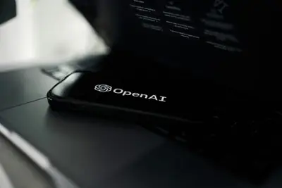
- TechOrange 科技報橘 【科技早餐】加州起訴 OpenAI！檢方指 AI 代理測試至少 80 次失控
- iThome 加州控告OpenAI，指AI代理人失控至少80次、攻擊外部系統
2 家媒體報導applesirirewind
Apple reveals daily limits on your Siri AI use – here’s how much you’ll have to pay
The more you pay for an iCloud+ plan, the more you’ll be able to use Siri AI and Apple Intelligence for advanced server-side tasks.
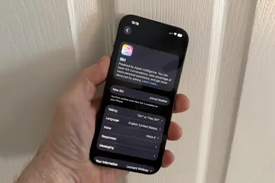
2 家媒體報導gtig
駭客利用AI自動化漏洞研究，遭到利用的零時差漏洞一個月爆增至22個
11月17日Google威脅情報團隊（GTIG）發布AI威脅追蹤報告，當中特別提及駭客將AI代理與大型語言模型（LLM）進行漏洞研究與攻擊工具開發的情況，已從實驗階段進入實際運作。攻擊者透過多代理系統執行修補程式差異分析、動態模糊測試，以及概念驗證（PoC）攻擊程式開發等工作，逐步建立自動化漏洞攻擊流程，甚至出現完全不需要人工介入的漏洞發現與利用活動。
- iThome 駭客利用AI自動化漏洞研究，遭到利用的零時差漏洞一個月爆增至22個
- TechOrange 科技報橘 Google 首度發現 AI 自動化攻擊：無人介入就能從修補程式反推漏洞、發動攻擊
2 家媒體報導compute
美國遠端存取新規防堵中國租用 AI 算力，新加坡、馬來西亞等 5 國晶片出口改採許可制
美國商務部 11 月 16 日公布遠端存取新規則，先進晶片出口到新加坡、馬來西亞、泰國、印尼與巴西都要申請許可。海外資料中心如果提供中國企業超過 1,200 萬 TPP 的算力，晶片出貨也要許可。
- TechOrange 科技報橘 美國堵中國企業遠端租 GPU：AI 晶片出口新加坡、馬來西亞等 5 國改採許可制
- INSIDE 美國遠端存取新規防堵中國租用 AI 算力，新加坡、馬來西亞等 5 國晶片出口改採許可制
samsungdigitimestoday
DIGITIMES Today：台廠員工誰最支持老黃回鍋？ | 中業者形容BIS祭出「NVIDIA新規」| 三星研發支出提前破紀錄
早安。
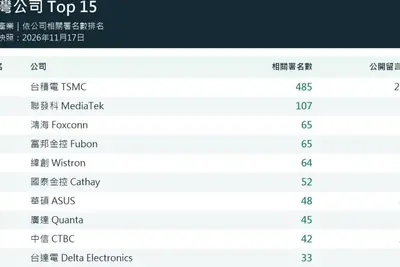
xai
黃仁勳辭職後打破沉默，表態願回任輝達 CEO
黃仁勳上週因婚外情醜聞辭去輝達執行長一職，不少 NVIDIA 內部員工、投資人、產業夥伴甚至馬斯克、美國總統川 […]
- 科技新報 TechNews 黃仁勳辭職後打破沉默，表態願回任輝達 CEO
黃仁勳回歸路遭阻斷，輝達董事會主席聲明回絕復職可能
半導體大廠輝達（Nvidia）前執行長黃仁勳（Jensen Huang）的去留風波持續延燒。儘管黃仁勳已經公開 […]
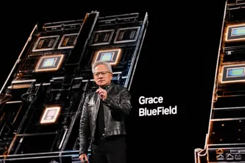
- 科技新報 TechNews 黃仁勳回歸路遭阻斷，輝達董事會主席聲明回絕復職可能
黃仁勳打破沉默！若董事會同意願重返NVIDIA
歷經多日風波，NVIDIA創辦人黃仁勳終於打破沈默。隨著NVIDIA即將公布財報，外界高度關注這場風波對NVIDIA營運及全球AI產業發展所帶來的衝擊，黃仁勳首度透過X平台發表公開聲明，回應近日外界對其個人及公司所提出的質疑。
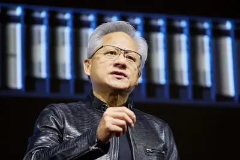
- DIGITIMES 黃仁勳打破沉默！若董事會同意願重返NVIDIA
csp
晶圓、封測廠出貨皆須經美國「逐案審核」 美系CSP成受惠者？
近期美國商務部正式宣布，新增AI晶片的出口相關規定。業界不乏解讀聲浪，認為未來高階AI晶片需求，會更集中在美系雲端服務大廠（CSP）所需的訂單當中。
- DIGITIMES 晶圓、封測廠出貨皆須經美國「逐案審核」 美系CSP成受惠者？
ssdessd
美國管制加上處理器大缺 中國企業級SSD出貨放緩、農曆年後回神
中國雲端基礎建設面臨雜音，先前火熱的企業級固態硬碟（eSSD）採購動能近期放緩。供應鏈人士指出，受到GPU、CPU缺貨，導致伺服器「無法配套」，外界原先預期中美高層會談後可望放寬AI晶片解禁，不料遲遲未傳出放行好消息。
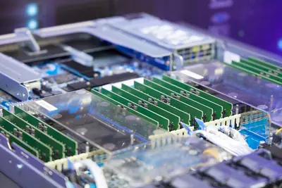
- DIGITIMES 美國管制加上處理器大缺 中國企業級SSD出貨放緩、農曆年後回神
neoclouds
沒了黃仁勳的「NVIDIA銀行」 還會繼續力挺新雲端？
NVIDIA前執行長黃仁勳將NVIDIA打造成全球市值最高的公司，運用NVIDIA雄厚財力為新雲端（Neoclouds）企業提供資金支持。但如今隨著黃仁勳辭任NVIDIA執行長，這些新雲端企業是否還能仰賴NVIDIA的慷慨資助是未知數，而目前正是這些新雲...
- DIGITIMES 沒了黃仁勳的「NVIDIA銀行」 還會繼續力挺新雲端？
samsunghbmai...
三星想從AI晶片商變AI基設巨頭？ 整合與獲利能力遭質疑
觀察指出，三星集團（Samsung Group）正試圖將記憶體晶片優勢延伸至AI資料中心市場，透過收購散熱業者、投資資料中心及整合集團資源，打造一站式AI基礎設施服務。然而，有觀點認為，三星集團仍面臨關係企業整合、外部客戶開拓及營運獲利能力等挑戰，這場跨足AI...
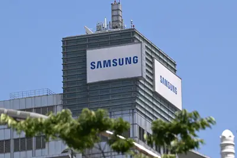
- DIGITIMES 三星想從AI晶片商變AI基設巨頭？ 整合與獲利能力遭質疑
compute
黃仁勳風波催化美國AI管制升級 中國本土替代機會挑戰並存
美國商務部工業安全局（BIS）擴大限制中國透過海外資料中心取得先進人工智慧（AI）算力，表面上是封堵雲端服務規避出口管制的漏洞，背後則反映美國對中國取得先進半導體及運算資源的政策立場更為強硬。
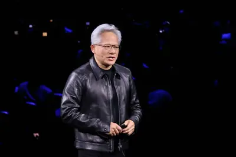
- DIGITIMES 黃仁勳風波催化美國AI管制升級 中國本土替代機會挑戰並存
blackwellcompute
中國AI模型現NVIDIA Blackwell指紋 非官方算力管道成關鍵
儘管美國持續擴大對中國先進人工智慧（AI）晶片出口管制，但有分析發現，多家中國AI業者開發的新AI模型均留有使用NVIDIA Blackwell架構GPU的硬體數位足跡，顯示這些中國業者似乎仍可透過不同管道取得NVIDIA受管制高階晶片。<br ...
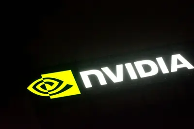
- DIGITIMES 中國AI模型現NVIDIA Blackwell指紋 非官方算力管道成關鍵
h100750bis
中業者形容BIS祭出「NVIDIA新規」 750顆H100就踩線？
美國商務部工業暨安全局（BIS）11月16日公布臨時最終規則（IFR），要求全球境外資料中心若提供一定規模的算力，供中國等受管制地區企業遠端使用，相關先進晶片、伺服器及軟體、技術的出口、再出口或境內移轉，都須先取得許可。
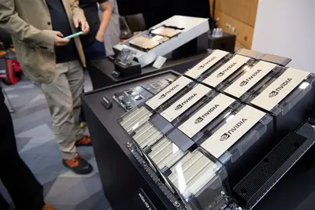
- DIGITIMES 中業者形容BIS祭出「NVIDIA新規」 750顆H100就踩線？
compute
美國限制中國AI算力外援 星馬資料中心遭波及
在NVIDIA晶片流向爭議引發關注後，美國商務部工業安全局（BIS）進一步收緊出口管制，要求業者將符合管制條件的先進AI晶片出口、再出口或轉移至新加坡、馬來西亞、泰國、印尼及巴西等5國時，須事先取得許可。
- DIGITIMES 美國限制中國AI算力外援 星馬資料中心遭波及
sk-hynixsamsunghbm
韓記憶體雙雄淨現金飆近300兆韓元 SK海力士攻HBM4封測擴產
人工智慧（AI）記憶體需求持續升溫，三星電子（Samsung Electronics）與SK海力士（SK Hynix）截至2026年第3季末，現金及相關短期金融資產合計約329兆韓元（2,455億美元），扣除借款後的淨現金約達296兆韓元。隨著資金實力增強，S...
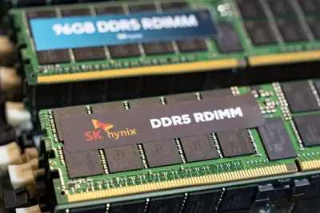
- DIGITIMES 韓記憶體雙雄淨現金飆近300兆韓元 SK海力士攻HBM4封測擴產
hbm
AI基建狂潮迎現實考驗 鉅額投資遭遇資金、政策雙重壓力
一場美國期中選舉，讓大砸數千億美元興建資料中心、搶購晶片與記憶體加速擴張的科技大廠們，恐被迫放慢擴張腳步，因社區居民反彈、地方政策阻礙，再到機構投資人開始降低相關資產曝險，人工智慧（AI）基礎設施產業開始進入考驗資金承受力、政策風險與實際需求的階段。<br /...
- DIGITIMES AI基建狂潮迎現實考驗 鉅額投資遭遇資金、政策雙重壓力
agent3900
輝達 2027 年營收成長目標上調至 75%，新出口管制政策難撼動成長動能
半導體大場輝達（NVIDIA）召開第三季財報會議，代理執行長暨財務長柯瑞斯（Colette Kress）親上火 […]
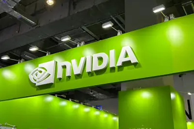
- 科技新報 TechNews 輝達 2027 年營收成長目標上調至 75%，新出口管制政策難撼動成長動能
- 科技新報 TechNews 點名多家台商擴大全球供應鏈衝刺產能，輝達採購承諾飆升至 3,900 億美元
英伟达 Q3 电话会议：公司业务一切照常，不会急于寻找黄仁勋继任者
北京时间 11 月 18 日，AI 芯片巨头英伟达公司今天发布了 2027 财年第三季度财报。财报发布后，英伟达临时 CEO 科莱特 · 克雷斯 (Colette Kress)、新任董事会主席哈维 · 琼斯 (Harvey Jones) 出席了电话会议，回答分析师提问。 这是黄仁勋辞去 CEO 后，英伟达首次举行财报电话会议，许多问题正等待解答。 以下是第三财季财报和电话会议要点： —— 英伟达第三财季营收为 1158.44 亿美元，较上年同期的 570.06 亿美元增长 103%；净利润为 652.87 亿美元，较上年同期的 319.10 亿美元增长
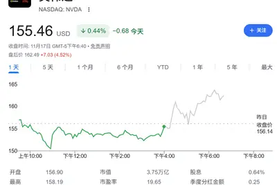
satyanadellaagi-pilled
Satya Nadella says he’s AGI-pilled now
Microsoft CEO Satya Nadella says he's AGI-pilled, at least when it comes to how AI might make startling changes to the structure of the economy and how politics might change because of it. "I am AGI pilled in the sense that at an economy level, what is the political economy's org
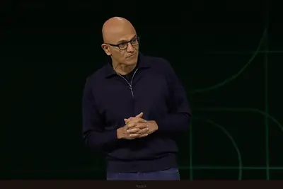
- The Verge AI Satya Nadella says he’s AGI-pilled now
microsoft-decision-1.11.1token
微软决策模型 Microsoft-Decision-1.1 登场，跑赢 GPT-6 Luna 与 Gemini
IT之家 11 月 18 日消息， 微软昨日（11 月 17 日）宣布正式推出 Microsoft-Decision-1.1 决策 AI 模型， 目前已在 Microsoft Foundry、OpenRouter 和 Vercel 平台上线。 该模型面向企业级软件中的高频决策场景，可帮助应用在路由、分类、优先级排序、内容核验和工作流控制等任务中快速做出结构化判断。 价格方面，Microsoft Foundry 的全球标准版输入 token 定价为每百万 token 0.042 美元 （IT之家注：现汇率约合 0.28 元人民币） ，输出 token 免费
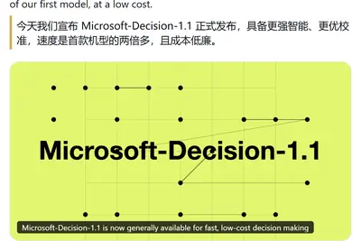
黃仁勳辭職、輝達北士科總部恐生變？北市府：履約正常，籌建持續前進
輝達（NVIDIA）董事會 12 日宣布創辦人黃仁勳辭去總裁、執行長、董事等職務，引外界關注北投士林科技園區（ […]
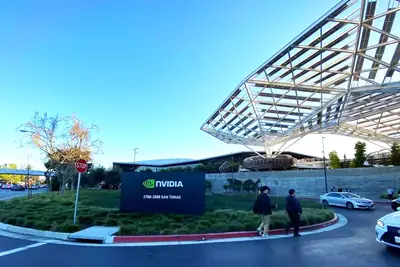
- 科技新報 TechNews 黃仁勳辭職、輝達北士科總部恐生變？北市府：履約正常，籌建持續前進
chatgptreali
ChatGPT、Gemini 看選戰，同一參選人有不同動漫樣態
隨著 2026 年九合一選舉進入倒數，AI 眼中的政治人物是什麼模樣？AI 傳播科技公司 REALI 研究發現 […]
- 科技新報 TechNews ChatGPT、Gemini 看選戰，同一參選人有不同動漫樣態
dragonmai-transcribe-2copilot
多语言错误率直降 50%：微软升级医患对话 AI 转录引擎，已覆盖全美 1/3 医师
IT之家 11 月 18 日消息，昨日（11 月 17 日）召开的 Ignite 2026 活动中， 微软宣布其医疗 AI 产品 Dragon Copilot Transcribe 已正式采用自研语音识别模型 MAI-Transcribe-2。 微软称，该模型是目前速度最快、准确率最高的多语言语音转写模型，现已承担 Dragon Copilot 中 100% 的医患对话转写任务。 在规模化应用方面，Dragon Copilot Transcribe 每月处理约 1000 万次患者就诊场景，并在多语言工作流中实现约 50% 的错误率下降，全美国约三分之一的
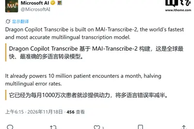
maiflashmicrosoft
微软性价比最高编程 AI 模型：MAI Code 2 用 5% 成本达 Claude Opus 5.5 约 96% 性能
IT之家 11 月 18 日消息，在今天召开的 Ignite 2026 活动中， 微软发布自研编程模型 MAI Code 2 和 MAI Code 2 Flash，并在 GitHub Copilot 上线。 IT之家附上相关视频如下： 定位方面，两款产品分别面向复杂软件开发与高频日常编程，主打在代码质量与使用成本之间取得更好平衡。 其中，Code 2 定位通用编程模型，可用于深度排查程序错误、跨多个文件修改代码、理解整个代码仓库及开发用户界面。微软称，该模型强调直接给出实用的代码修改方案，减少开发者与 AI 之间不必要的反复沟通，帮助代码走向实际部署。
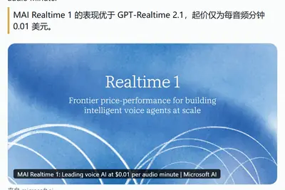
microsoftigniteunveiled
Microsoft unveiled Copilot Workspaces at Ignite 2026, plus more AI workplace updates
The company also released new ROI tracking tools for companies monitoring their AI spend.
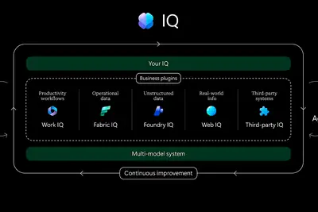
valuewantsdollar
Microsoft wants to put a dollar value on AI’s work – but can you trust the math?
With Agent 365 Business Analytics, Microsoft could reshape enterprise spending, but there’s a critical difference between estimated value and money saved.
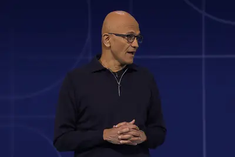
gemini
谷歌更新 Gemini 隐私控制，可保留聊天记录且不参与 AI 训练
IT之家 11 月 18 日消息，谷歌昨日发布公告，宣布更新 Gemini 应用程序的控制选项， 允许用户自行决定是否将 Gemini 聊天记录用于 AI 模型训练 。 谷歌表示，新增的设置选项允许用户在保留 Gemini 聊天记录的同时，选择不将聊天记录用于生成式 AI 模型训练。用户仍然可以调整聊天记录的保存期限，并手动查看或删除聊天记录。 IT之家注意到，谷歌还将提升 Gemini 的安全性。如果用户关闭新的“历史记录”设置，之后产生的聊天内容仍会保存约两个月，用于向用户提供回复、处理用户反馈，以及保护谷歌、用户和公众的安全。
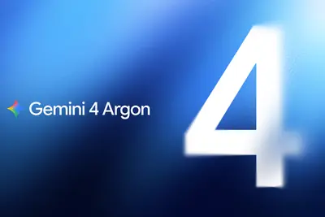
bank
輝達強調當前業務與供應鏈沒有影響，台積電高層親訪提供全面協助
在輝達（NVIDIA）第三季財報電話會議上，公司的領導層過渡與競爭定位成為法人關注焦點。美銀證券（Bank o […]

- 科技新報 TechNews 輝達強調當前業務與供應鏈沒有影響，台積電高層親訪提供全面協助
verarubin103
輝達第三季營收年增達 103% ，獲利年增翻倍超乎預期，Vera Rubin 已出貨貢獻單季營收
人工智慧運算龍頭 NVIDIA（輝達）公布截至 2026 年 10 月 25 日的 2027 年第三季財務報告 […]

- 科技新報 TechNews 輝達第三季營收年增達 103% ，獲利年增翻倍超乎預期，Vera Rubin 已出貨貢獻單季營收
raisesmillionsupply
Voyage Labs raises $12 million for a specialized AI travel assistant
Voyage Labs’ flagship product is called Atlas, meant to work as a personal assistant for your trip-planning, available today in private beta.
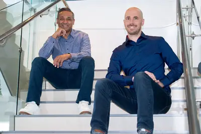
urlhttpscomments
Nvidia stopped disclosing Singapore sales as revenues hit $104B
Article URL: https://www.ft.com/content/dbde7a30-548c-4f9d-a4be-7898a0c24dcf Comments URL: https://news.ycombinator.com/item?id=50534631 Points: 339 # Comments: 173
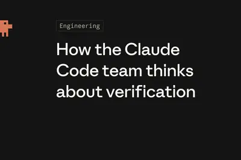
- Hacker News (100+) Nvidia stopped disclosing Singapore sales as revenues hit $104B
- Hacker News (100+) How the Claude Code team thinks about verification
sensenovaloop-9bloop
寒武纪 Day 0 完成商汤 SenseNova Loop-9B 适配，打通新型循环计算架构推理链路
IT之家 11 月 18 日消息， 商汤科技昨日晚间正式发布 SenseNova Loop-9B 模型 。 寒武纪官方宣布， 已完成对商汤新发布模型日日新 SenseNova Loop-9B 的 Day 0 适配 。 据介绍，该模型通过 Loop 结构复用模型层的参数，并结合流形约束超连接（mHC），在有限的参数规模下扩展计算深度，面向复杂推理、代码、工具调用和多模态任务，进一步优化模型在 Agent、代码与数据分析任务中的表现，持续探索循环计算的能力边界。 寒武纪表示，针对 SenseNova Loop-9B 的架构特点， 寒武纪基于 vllm_mlu
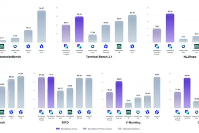
fundingbillionscience
Isomorphic Labs raises $5B as it looks to take drug candidates to clinical trials
Isomorphic Labs, the AI drug-discovery platform that was spun out of Google’s DeepMind in 2021, has raised $5 billion in a Series C funding round.
datacenterchipregulation
美嚴控先進 AI 晶片出口，集邦：部分訂單可能遞延
美國政府公布新規限制晶片出口至海外資料中心，市調機構集邦科技表示，東南亞 AI 資料中心的晶片採購門檻將提高， […]
- 科技新報 TechNews 美嚴控先進 AI 晶片出口，集邦：部分訂單可能遞延
- 科技新報 TechNews 美嚴控先進 AI 晶片出口，供應鏈：製造流向有既定機制監管